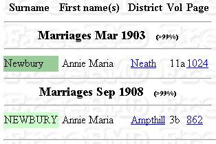

Ann Newbury (1880 - ????) 
Daughter of William Newbury (born around 1837 in Sundon, Bedfordshire) and Elizabeth Denton (born on 1838.12.16 in Harlington, Bedfordshire) who were married on 1858.09.27 in Sundon, Bedfordshire.
1880 b. Harlington, Bedfordshire, England ( unconfirmed: Dec 1879, Newberry Anne Marie Woburn v. 3b, pg.381 )
1881.04.03 living in Harlington, Bedfordshire, England at 2 Railway Cottage
| 1881.04.03 Census, | ||||||
| Residence: 2 Railway Cottage, Harlington, Bedfordshire | ||||||
| Last names | First names | Relation to Head | Condition as to Marriage | Age on Last Birthday | Occupation | Where Born |
| NEWBURY | WILLIAM | Head | M | 44 | Railway Signalman | Sundon Bedford |
| NEWBURY | ELIZABETH | Wife | M | 42 | -- | Harlington Bedford |
| NEWBURY | WILLIAM | Son | U | 19 | Railway Porter | Sundon Bedford |
| NEWBURY | THOMAS | Son | U | 16 | Farm Lab | Sundon Bedford |
| NEWBURY | JOB | Son | -- | 10 | Scholar | Sundon Bedford |
| NEWBURY | ANN | Daur | -- | 1 | -- | Harlington Bedford |
| DENTON | LYDIA | Mother | W | 88 | -- | Wootton, Bedford |
1891.04.03 (11) living in Harlington, Bedfordshire, England on Upper East End
| 1891.04.05 Census, Civil Parish of Harlington, Ecclesiastical District of Harlington, Rural Sanitary District of Woburn | ||||||
| Residence: Upper East End, Harlington, Bedfordshire (2 rooms) | ||||||
| Last names | First names | Relation to Head | Condition as to Marriage | Age on Last Birthday | Occupation | Where Born |
| NEWBERRY | WILLIAM | Head | M | 54 | Platelayer Railway | Sundon, Beds |
| NEWBERRY | ELIZABETH | Wife | M | 52 | -- | Harlington, Beds |
| NEWBERRY | ANNIE | Daur | S | 11 | Scholar | Harlington, Beds |
| NEWBERRY | MARK | Grandson | S | 5 | Scholar | Edmonton, Middlesex |
1901.03.31 census: (21) living Harlington, Bedfordshire, England, Rookery
| 1901 UK Census, Civil Parish of Harlington, Ecclesiastical Parish of Harlington, Rural District of Amphill | ||||||
| Residence: Rookery, Harlington, Bedfordshire | ||||||
| Last names | First names | Relation to Head | Condition as to Marriage | Age on Last Birthday | Occupation | Where Born |
| NEWBURY | WILLIAM | Head | M | 65 | Platelayer Railway | Sundon |
| NEWBURY | ELIZABETH | Wife | M | 62 | -- | Harlington |
| NEWBURY | ANNIE M | Daur | S | 21 | Assistant School Teacher | Harlington |
| NEWBURY | MARK L | Grandson | S | 15 | Agricultural Labourer | Lower Edmonton, Middx. |
A couple of possibilities, unconfirmed:
